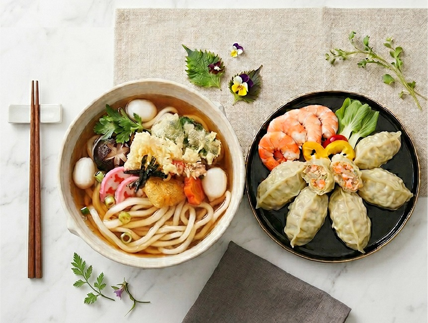

Sol Food Co., Ltd. is a Korean dumpling manufacturer that has devoted itself to the craft of mandu since 1987 — a trusted partner for U.S. importers and distributors entering the Korean food category.

Under the food-specialty brand miri, Sol Food brings its decades of expertise to a new generation of eaters — starting with the U.S. market.
Our name Sol carries three values:
| Company | Sol Food Co., Ltd. |
|---|---|
| Founded | October 1987 |
| CEO | Nochun Park |
| Annual Revenue | $10.87M USD (2025) |
| Employees | 98 (2024) |
| Core Products | Mandu (dumplings) & Udon |
| Headquarters | Boeun-gun, Chungcheongbuk-do, Korea |
| Factory | Okcheon-gun, Chungcheongbuk-do (Site area 9,487㎡) |
Recognized partner of Korea's largest food companies — Daesang Outstanding Partner Award (2003, 2006, 2014, 2022, 2023) and CJ Best Partner Award.
Domestic: Daesang · Hansung Enterprise · Sajodaerim · Dongwon F&B · Hfood · Jinjuham
Export: GMF · Samjin Globalnet · R&G Corp · Woosin · Heechang · NTS
We work with Korean food importers in the USA, Korean food distributors, and Asian food wholesale distributors looking for a long-term manufacturing partner — not a one-off supplier.